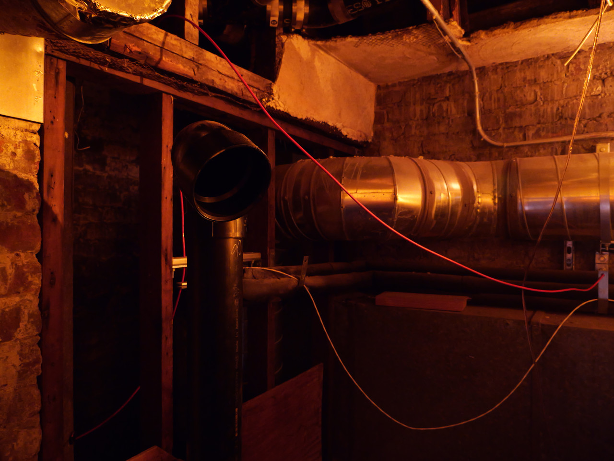

2026
grief is a piece composed for live sewage and bespoke AI.
Sewers hold everything we want evicted from public life. But what we send into the depths below is not gone, only hidden. What stories do we hear when we let ourselves face evidence of past life? An array of handmade microphones have been connected to the water pipes in this building. They summon an orchestra of discarded sounds—tapes, home video, shellac records. Water waste discarded conjures sonic waste rediscovered.
TIAT, SAN FRANCISCO